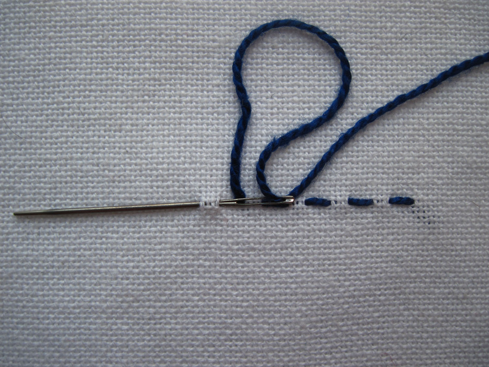
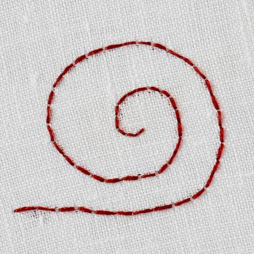
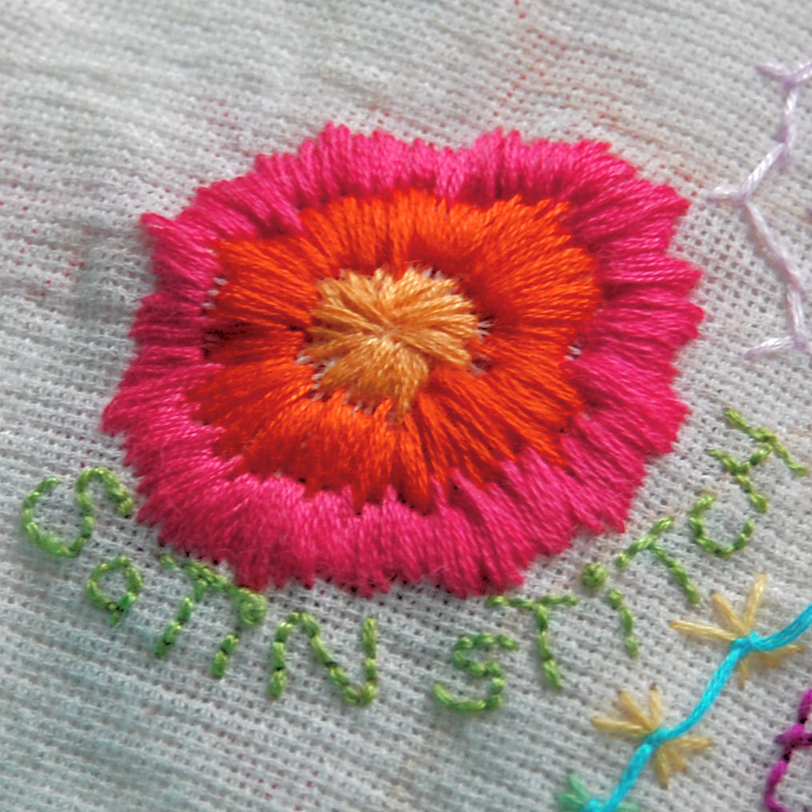
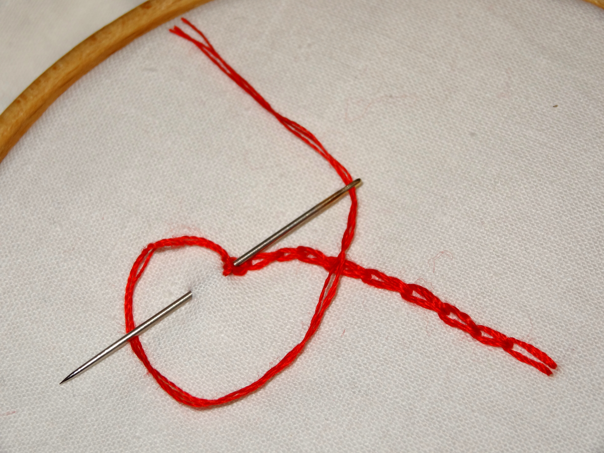
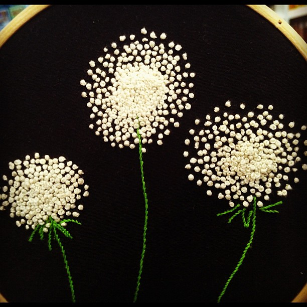
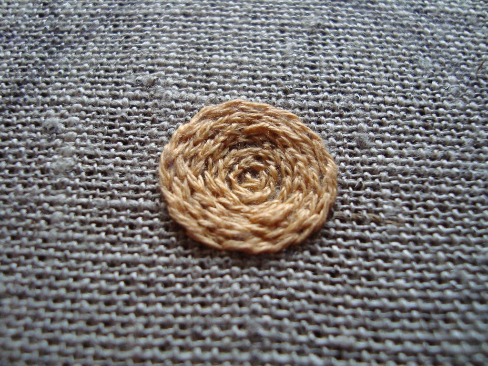
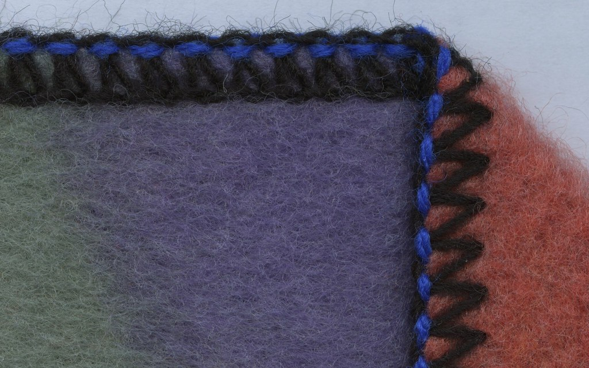
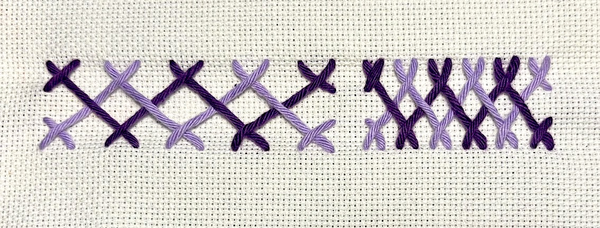

Embroidery uses a variety of stitches to create texture, detail and decorative patterns.
Below is an overview of some of the most common stitches to help you master this craft!
|
 Running stitchClosing seams The most basic stitch in embroidery on which all other sewing stitches are based. They are most often not visible. |
 BackstitchOutlines, fine details and lettering The strongest among the basic stitches, individual stitches are made backward to the general direction of sewing. |
 Satin stitchFilling in spaces A series of smooth flat stitches that completely covers a section of the background fabric. |
 Chain stitchEmbellishment near seams A series of looped stitches form a chain-like pattern. They can form straight or curved, flowing lines. |
|
 French knotEmbellishment, filling in spaces A decorative raised knot that adds dimension and texture. The knot can become larger if the thread is looped multiple times. |
 Split stitchOutlines, lettering This stitch creates a very even line every time the needle goes through the fabric. It resembles a narrow and smooth chain stitch. |
 Blanket stitchDecorative and secure borders A decorative stitch that reinforces edges and prevents the fabric from fraying. |
 Herringbone stitchEmbellishment, secure borders A very tight weave makes this stitch strong and sturdy. It creates a texture and secures edges. |